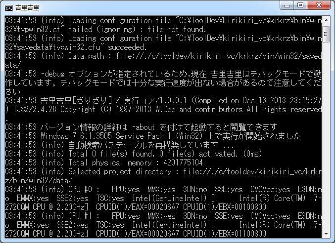

About the console
When launched from the command line, a message is displayed on the command line.
In the console, you can display various messages for debugging, such as Kirikiri's system and user scripts using the
Debug.message
method.
Screen description

The command line itself.